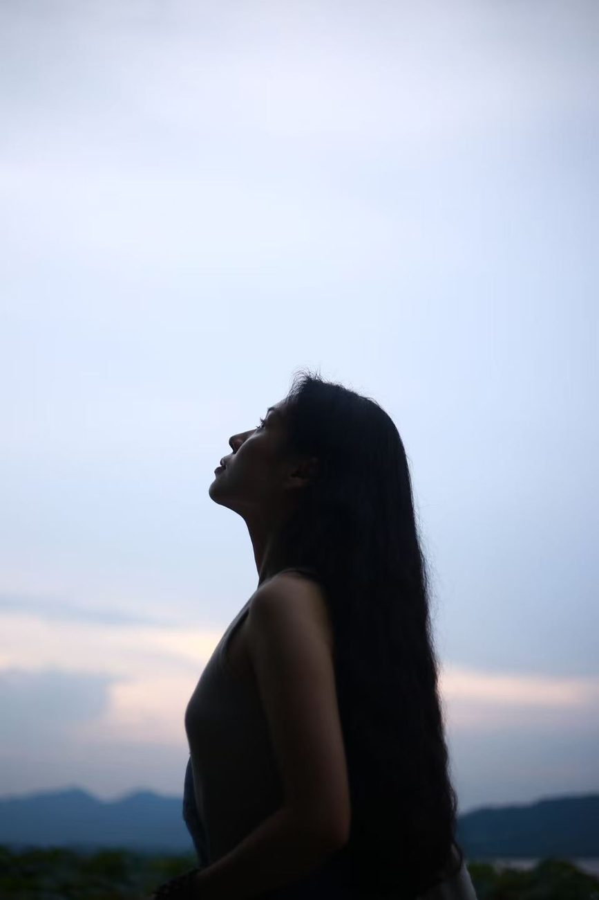

Coaching教练
Hey there, I'm Kaya, a certified life coach.你好，我是 Kaya，一名认证生命教练。
I support young women to break free from societal expectations, so they create an independent, joyous and powerful life. 我支持年轻女性挣脱社会期待的束缚，活出独立、喜悦而有力量的人生。
ICF PCC Certified Coach · view credential ↗ICF PCC 认证教练 · 查看证书 ↗

Becoming a coach in 2022 wasn't part of my original plan. I was on the conventional path: good school, stable job, city life. But deep down, I craved more adventure, a bigger world. I kept telling myself, "Maybe later," thinking I didn't have enough money or smarts for my dream life.
Then, the 3-month lockdown in Shanghai hit. Stuck in my small apartment, my biggest fear was wasting my life waiting for the perfect moment while doing nothing. That fear was a wake-up call, prompting me to rethink everything and focus on what truly mattered. I realized I wanted a job that let me work from anywhere and explore the world. That's when coaching came into the picture. Although I had explored it two years earlier, it was more of a hobby back then. Now, it presented itself as the perfect path, aligned with everything I longed for.
So my coaching journey began again. During lockdown, I retook my training, started my business, and got my first clients. When the lockdown ended, I said goodbye to my old job, embraced a nomadic life, and kept coaching while exploring the world.
What's funny is that while I'm coaching others, I'm the one feeling deeply empowered. I've had the privilege of witnessing remarkable transformations, as my clients break through fears and self-doubt and start to live authentically, with clarity, focus, ease, and grace. It reaffirms my belief that everyone is born whole and complete, with the power to live their dream life if they're willing to embark on the journey.
Coaching has supported me and my clients to embrace lives filled with harmony, meaning, satisfaction, and fulfillment. And now, I want to share that gift with you.
Ready to spark your personal revolution? Let's make it happen.
2022 年成为教练，本不在我的原计划里。我一直走在一条常规的路上：好学校、稳定工作、城市生活。但内心深处，我渴望更多冒险、更大的世界。我总跟自己说「以后吧」，觉得自己没有足够的钱、也没有足够的聪明，去过想要的生活。
然后，上海那场三个月的封控来了。困在小小的公寓里，我最大的恐惧是：就这样什么都不做地等一个「完美时机」，把人生白白浪费掉。那份恐惧像一记警钟，逼我重新想清楚，什么才是真正重要的。我意识到，我想要一份能让我在任何地方工作、去看世界的事业。教练就是在那时进入我的视野。其实两年前我就接触过它，但那时更像一个爱好。这一次，它成了那条与我所有向往都契合的路。
于是，我的教练之旅重新开始。封控期间，我重修了教练培训，开启了自己的事业，接到第一批客户。封控结束后，我告别旧工作，拥抱游牧般的生活，一边看世界，一边做教练。
有意思的是，在陪伴他人的同时，被深深赋能的其实是我自己。我有幸见证一次次动人的转变：客户们穿过恐惧与自我怀疑，开始真实地、清晰地、从容而优雅地生活。这一次次印证了我的信念：每个人生来就是完整的，只要愿意上路，就有力量活出自己梦想的人生。
教练陪伴我和我的客户，走向和谐、有意义、满足而丰盈的生活。现在，我也想把这份礼物分享给你。
准备好点燃属于你的那场个人革命了吗？我们一起。
What is coaching?教练是什么？
- An open, creative, and non-judgmental conversation.
- Brings out your powerful being, helping you see who you truly are and what matters.
- Guides consistent action towards your dreams, releasing doubts and fears.
- Discovers abundant resources and makes them your support system.
- Unleashes courage to say yes to opportunities on your path.
- Aligns short-term goals with life's intentions, unlocking creativity and inner power.
- 一场开放、有创造力、不带评判的对话。
- 唤出你内在有力量的存在，让你看见真正的自己，与真正在意的东西。
- 引导你朝梦想持续行动，卸下怀疑与恐惧。
- 发现你身上丰沛的资源，让它们成为你的支持系统。
- 释放勇气，对路上的机会说「是」。
- 让短期目标与人生意图对齐，解锁创造力与内在力量。
Useful distinctions几个有用的区分
- Therapy focuses on healing and insight. Coaching centers on taking actionable steps.
- Consulting offers solutions through expertise, while coaching empowers you to find and act on your own wisdom.
- Training follows a set curriculum. Coaching identifies your objectives and crafts a unique path.
- Mentoring guides based on the mentor's knowledge. Coaching guides based on your goals and wisdom.
- Counseling concentrates on the past for emotional healing. Coaching shifts to the present and future: goal-setting, strategy, action, and accountability.
- 心理治疗侧重疗愈与获得洞察；教练聚焦于采取切实的行动。
- 咨询顾问用专业给出方案，而教练赋能你，去找到并依着自己的智慧行动。
- 培训遵循既定的课程；教练识别你的目标，为你量身打造独特的路径。
- 导师依据自身的知识给出指引；教练则依据你的目标与智慧来引导。
- 心理咨询关注过去、疗愈情绪；教练把焦点转向当下与未来：目标设定、策略、行动与承担。
Benefits of coaching教练能带来什么
Through coaching, I support you to:透过教练，我支持你：
- Explore how you truly want to live.
- Overcome fears to discover inner desires and courage.
- Understand the nature of self-sabotage and gradually eliminate it.
- Identify ingrained behaviour patterns and pinpoint their roots.
- Master methods to break patterns and begin a fresh life experience.
- Stop feeling stuck by finding at least 3 ways to break through.
- Embrace self-compassion and become your own gentle, steadfast companion.
- Systematically manage personal energy for a vibrant life.
- Achieve great things with ease, enjoying the process and naturally reaping results.
- 探索你真正想要怎样地活。
- 穿越恐惧，发现内心的渴望与勇气。
- 理解自我破坏的本质，并逐步化解它。
- 认出根深蒂固的行为模式，看清它们的根源。
- 掌握打破模式的方法，展开全新的人生体验。
- 不再卡住：为每个困境至少找到 3 条突破的路。
- 拥抱自我慈悲，成为自己温柔而坚定的陪伴。
- 系统地管理个人能量，活得鲜活有生气。
- 举重若轻地成事，享受过程，自然收获结果。
My coaching principles我的教练理念
Ontology本体论
My journey began with the Academy for Coaching Excellence, led by Dr. Maria Nemeth, grounded in ontology, the study of being. It explores the values we live by, the heroic journey we're on, and the lasting impact we want to leave. I guide you to observe your life without judgment, moving beyond old limits with clarity, focus, ease, and grace.我的教练之路始于 Maria Nemeth 博士创办的 Academy for Coaching Excellence，其根基是本体论，也就是关于「存在」的学问。它探讨我们赖以生活的价值、我们踏上的英雄旅程，以及我们想留下的长久影响。我引导你不带评判地观察自己的生活，以清晰、专注、从容与优雅，一次次跨越过往的边界。
Chinese Traditional Culture中国传统文化
Immersed in Chinese traditional culture, my philosophy is rooted in Buddhism, Taoism, and Yi Studies. In sessions, these create a "zen vibe." Clients often describe it as talking with a "transparent and warm being," or "wandering through a forest as the first morning light gently spreads its warmth everywhere."浸润于中国传统文化，我的人生哲学扎根于佛家、道家与易学。在教练中，这些底色会自然生出一种「禅意」。客户常形容那种体验，像在与一个「透明而温暖的存在」对话，又像「在清晨第一缕光里，穿行于一片把温暖轻轻铺满各处的森林」。
Education & Psychology教育与心理学
I hold a Master's in Education from the University of Pennsylvania, which taught me to empower people through human development, education, and positive psychology. I meet you as a whole person, eager to explore the contribution you're here to make and uncover the answers that already live in you.我拥有宾夕法尼亚大学的教育学硕士学位，它教会我从人的发展、教育与积极心理学的视角去赋能他人。我把你当作一个完整的人来对待，热切地想去探索你此生要做的贡献，也帮你找到那些本就住在你心里的答案。
Client Testimonials客户见证
The people I've walked alongside, in their own words.我曾陪伴同行的人们，用他们自己的话说。
From Kaya, I feel unwavering sincerity and acceptance. I sense a growing strength I never had before. Things I once wanted but dared not do, and thoughts I never dared to entertain, slowly materialized during the six months of coaching. I've also grown into a self I genuinely like. Even after coaching, this mindset accompanies me, constantly reminding me: go do what I want, there's so much I can do.在 Kaya 身上，我感受到一种不动摇的真诚与接纳，也感到自己长出了一股从未有过的力量。那些我曾经想做却不敢做的事，那些我从不敢去想的念头，在六个月的教练里，慢慢变成了真实。我也长成了一个我真心喜欢的自己。即使教练结束，这份心态依然陪着我，不断提醒我：去做我想做的，我能做的还有很多。
Kaya illuminates my path with her strength, encouraging me to journey alone. Through her coaching, I've learned to authentically embrace myself. In our conversations, I discover the richness and beauty within my own inner world.Kaya 用她的力量照亮我的路，也鼓励我独自上路。透过她的教练，我学会了真实地接纳自己。在我们的对话里，我发现了自己内在世界的丰盈与美。
After the first coaching session, I felt like I had evolved into a different version of myself. I can't imagine what will happen after the sixth conversation...第一次教练结束后，我就觉得自己好像蜕变成了另一个版本的我。我简直无法想象，第六次对话之后，会发生什么……
Kaya is a skilled questioner. I started with a lot of self-deprecation, but she empowered me. When caught in recurring emotions, Kaya, through questioning, helps me explore the essence of the issue, clarifying many things. She subtly reminds me of my many wonderful qualities.Kaya 很擅长提问。一开始我总是自我贬低，是她给了我力量。当我困在反复出现的情绪里，她用提问带我去探究问题的本质，很多事情因此清晰起来。她总是不着痕迹地，提醒我身上那许多美好的特质。
It feels like chatting with an old friend, expressing emotions freely while discovering underlying issues. Naturally, the fog lifts.那感觉就像和一位老朋友聊天，可以自在地表达情绪，同时又看见了藏在底下的问题。很自然地，迷雾就散开了。
Conversing with Kaya holds immense significance, a time and space amid the chaotic world to engage in a profound dialogue with oneself. Under her guidance, I honestly face my confusion and begin forming a conversational approach with myself.和 Kaya 的对话，对我意义重大：在纷乱的世界里，辟出一段时间与空间，与自己进行一场深入的对话。在她的引导下，我诚实地面对自己的困惑，也开始学着与自己对话。
In Kaya's coaching, she keenly captures details I've overlooked, or places of self-contradiction. Through our sessions, I've gained the courage and strength to face the real world.在 Kaya 的教练里，她总能敏锐地捕捉到我忽略的细节，或是我自相矛盾的地方。透过一次次对话，我获得了面对真实世界的勇气与力量。
Grateful for the moments spent with Kaya. Her presence and inspiration have repeatedly opened up more possibilities in my life.感恩与 Kaya 相处的那些时刻。她的陪伴与启发，一次次为我的人生，打开了更多的可能。
The package合作方式
6-Month Commitment6 个月的承诺
Dive into transformative coaching with a starting commitment for tangible results.以一份起步的承诺，投入深度转化的教练旅程，收获看得见的成果。
Two 60-Min Sessions / Month每月两次 60 分钟会谈
Two sessions each month, via phone or video chat.每月两次，通过电话或视频进行。
Unlimited Support无限支持
Unlimited text and email support, plus helpful tools for your success.无限的文字与邮件支持，外加助你成功的实用工具。
Investment投入
I envision a world where everyone is supported 100% and no one is left out. A sliding scale lets people who might face financial constraints access coaching too. Please assess your situation and choose the tier that fits your budget. 我心中有一个世界：每个人都被 100% 地支持，没有人被落下。滑动定价正是为了呼应这个愿景，让可能面临经济压力的人也能获得教练服务。请你评估自己的状况，选择适合你预算的一档。
If you can contribute at a higher tier, your investment helps those in lower tiers take part, fostering a diverse community.如果你有能力选择更高的一档，你的投入会帮助较低档位的人也能参与进来，一起滋养一个多元的社群。
Book a free discovery session预约一次免费探索会谈
Interested? Email me a note about the changes you're aiming for, the support you seek, and how you found me.感兴趣的话，给我发一封邮件，简单说说：你想要的改变、你希望从我这里得到的支持，以及你是怎么找到我的。